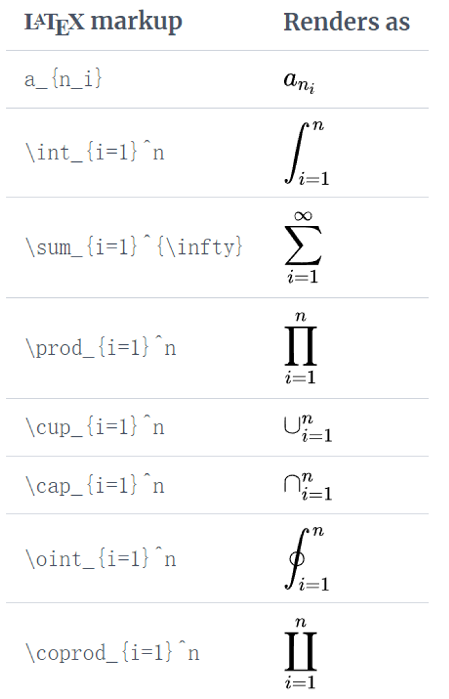

Latex
约 1106 个字 156 行代码 8 张图片 预计阅读时间 6 分钟
Reference¶
基本框架¶
-
第一行代码声明文本类型
-
序言（before the
\begin{document}）（preamble）[]内设置文本字体大小(12pt,11pt,10pt,9pt)，纸张尺寸(letterpaper,a4paper,legalpaper)等- 加载外部包(如
\usepackage{graphicx}),以拓展Latex功能
标题、作者与日期¶
- 在preamble部分添加三类行
\documentclass[12pt]{article}
\title{title name}
\author{author's name}
\author{author's\thanks{somebody}}
\date{Year month day}
\date{today}
\begin{document}
\maketitle
\end{document}
- 记得添加
\maketitle来排版
文本¶
- 斜体、粗体、下划线
- 注释：%
图像¶
- 前置：附加包（add-on package）
\usepackage{graphicx}
\graphicspath{{directory/}}
...
...
...
\includegraphics{file_path or file_name}
注意：目录地址有2个中括号
- 为图片添加标题(captions)、标签(labels)、参考文献(references)
\documentclass{article}
\usepackage{graphicx}
\graphicspath{{images/}}
\begin{document}
\begin{figure}[h]
\centering
\includegraphics[width=0.75\textwidth]{mesh}
\caption{A nice plot.}
\label{fig:mesh1}
\end{figure}
As you can see in figure \ref{fig:mesh1}, the function grows near the origin. This example is on page \pageref{fig:mesh1}.
\end{document}
常用命令：
\includegraphics[width=0.75\textwidth]{mesh}
\includegraphics指示 LATEX 将图形的宽度设置为文本宽度的 75%，其值存储在\textwidth命令中。\caption{A nice plot.}
此命令设置可以放置在图形上方或下方的图形标题。如果创建图表列表，则此标题将在该列表中使用。\label{fig:mesh1}
为其添加标签。该标签用于为图像生成一个数字，并与下一个命令结合使用，将允许您引用它。\ref{fig:mesh1}此代码将替换为与参考图对应的数字。
创建列表¶
- 可以使用环境创建不同类型的列表，这些环境用于封装实现特定排版功能所需的 LATEX 代码。
- 环境以
\begin{*environment-name*}开头并以\end{*environment-name*}结尾 - 其中
*environment-name*可以是 figure,tabular或列表类型之一：itemize无序列表或enumerate有序列表。 -
有序列表：
-
无序列表：做法相同，就是 enumerate 换成 itemize
{kind=link}
{kind=link}
数学公式¶
两种模式：Inline math mode
Display math mode
-
Inline math mode：嵌入文本
\documentclass[12pt, letterpaper]{article} \begin{document} \begin{math} E=mc^2 \end{math} is typeset in a paragraph using inline math mode---as is $E=mc^2$, and so too is \(E=mc^2\). \end{document}示例
\[ E=mc^2 \]is typeset in a paragraph using inline math mode --- as is \(E=mc^2\), and so too is \(E=mc^2\)
排版使用以下分隔符对之一：或
$ ... $\begin{math} ... \end{math} -
Display math mode：另行醒目
\documentclass[12pt, letterpaper]{article} \begin{document} The mass-energy equivalence is described by the famous equation \[ E=mc^2 \] discovered in 1905 by Albert Einstein. In natural units ($c = 1$), the formula expresses the identity \begin{equation} E=m \end{equation} \end{document}示例
The mass-energy equivalence is described by the famous equation
\[ E=mc^2 \]discovered in 1905 by Albert Einstein
In natural units (\(c = 1\)), the formula expresses the identity\[ E=m \tag{1} \]- 使用以下分隔符对之一：
\[ ... \]\begin{displaymath} ... \end{displaymath}\begin{equation} ... \end{equation}（有公式编号） - 示例
\documentclass{article} \begin{document} Subscripts in math mode are written as $a_b$ and superscripts are written as $a^b$. These can be combined and nested to write expressions such as \[ T^{i_1 i_2 \dots i_p}_{j_1 j_2 \dots j_q} = T(x^{i_1},\dots,x^{i_p},e_{j_1},\dots,e_{j_q}) \] We write integrals using $\int$ and fractions using $\frac{a}{b}$. Limits are placed on integrals using superscripts and subscripts: \[ \int_0^1 \frac{dx}{e^x} = \frac{e-1}{e} \] Lower case Greek letters are written as $\omega$ $\delta$ etc. while upper case Greek letters are written as $\Omega$ $\Delta$. Mathematical operators are prefixed with a backslash as $\sin(\beta)$, $\cos(\alpha)$, $\log(x)$ etc. \end{document}示例
Subscripts in math mode are written as \(a_b\) and superscripts are written as \(a^b\). These can be combined and nested to write expressions such as
\[ T^{i_1 i_2 \dots i_p}_{j_1 j_2 \dots j_q} = T(x^{i_1},\dots,x^{i_p},e_{j_1},\dots,e_{j_q}) \]We write integrals using \(\int\) and fractions using \(\frac{a}{b}\). Limits are placed on integrals using superscripts and subscripts:
\[ \int_0^1 \frac{dx}{e^x} = \frac{e-1}{e} \]Lower case Greek letters are written as \(\omega\) \(\delta\) etc. while upper case Greek letters are written as \(\Omega\) \(\Delta\).
Mathematical operators are prefixed with a backslash as \(\sin(\beta)\), \(\cos(\alpha)\), \(\log(x)\) etc.
- 使用以下分隔符对之一：
-
amsmath包提供equation*的环境： \usepackage{amsath} help article. -
教程
- Mathematical expressions数学表达式
- Subscripts and superscripts下标和上标 
- Brackets and Parentheses括号和括号
-
Fractions and Binomials 分数和二项式
- \frac{enumerator}{denominator}
- 各类文本呈现形式
\textstyle：在段落中应用用于数学排版的样式\displaystyle：将数学排版的风格单独应用于行\scriptstyle：应用用于下标或上标的样式\scriptscriptstyle：应用用于二阶下标或上标的样式
\documentclass{article} % Using the geometry package to reduce % the width of help article graphics \usepackage[textwidth=8cm]{geometry} \usepackage{amsmath}% For the \text{...} command \begin{document} We use the \texttt{amsmath} package command \verb|\text{...}| to create text-only fractions like this: \[\frac{\text{numerator}}{\text{denominator}}\] Without the \verb|\text{...}| command the result looks like this: \[\frac{numerator}{denominator}\] \end{document}示例
We use the amsmath package command \text(...) to create text-only fractions like this:
\[\frac{\text{numerator}}{\text{denominator}}\]Without the \text(...) command the result looks like this:
\[\frac{numerator}{denominator}\]\documentclass{article} % Using the geometry package to reduce % the width of help article graphics \usepackage[textwidth=9.5cm]{geometry} \begin{document} Fractions typeset within a paragraph typically look like this: \(\frac{3x}{2}\). You can force \LaTeX{} to use the larger display style, such as \( \displaystyle \frac{3x}{2} \), which also has an effect on line spacing. The size of maths in a paragraph can also be reduced: \(\scriptstyle \frac{3x}{2}\) or \(\scriptscriptstyle \frac{3x}{2}\). For the \verb|\scriptscriptstyle| example note the reduction in spacing: characters are moved closer to the \textit{vinculum} (the line separating numerator and denominator). Equally, you can change the style of mathematics normally typeset in display style: \[f(x)=\frac{P(x)}{Q(x)}\quad \textrm{and}\quad \textstyle f(x)=\frac{P(x)}{Q(x)}\quad \textrm{and}\quad \scriptstyle f(x)=\frac{P(x)}{Q(x)}\] \end{document}示例
Fractions typeset within a paragraph typically look like this: \(\frac{3x}{2}\). You can force \(\LaTeX{}\) to use the larger display style, such as \( \displaystyle \frac{3x}{2} \), which also has an effect on line spacing. The size of maths in a paragraph can also be reduced: \(\scriptstyle \frac{3x}{2}\) or \(\scriptscriptstyle \frac{3x}{2}\). For the \scriptscriptstyle example note the reduction in spacing: characters are moved closer to the \(\textit{vinculum}\) (the line separating numerator and denominator).
Equally, you can change the style of mathematics normally typeset in display style:
\[f(x)=\frac{P(x)}{Q(x)}\quad \textrm{and}\quad \textstyle f(x)=\frac{P(x)}{Q(x)}\quad \textrm{and}\quad \scriptstyle f(x)=\frac{P(x)}{Q(x)}\] -
套娃且字体合适的分数
\cfrac\documentclass{article} % Using the geometry package to reduce % the width of help article graphics \usepackage[textwidth=9.5cm]{geometry} % Load amsmath to access the \cfrac{...}{...} command \usepackage{amsmath} \begin{document} Fractions can be nested but, in this example, note how the default math styles, as used in the denominator, don't produce ideal results... \[ \frac{1+\frac{a}{b}}{1+\frac{1}{1+\frac{1}{a}}} \] \noindent ...so we use \verb|\displaystyle| to improve typesetting: \[ \frac{1+\frac{a}{b}} {\displaystyle 1+\frac{1}{1+\frac{1}{a}}} \] Here is an example which uses the \texttt{amsmath} \verb|\cfrac| command: \[ a_0+\cfrac{1}{a_1+\cfrac{1}{a_2+\cfrac{1}{a_3+\cdots}}} \] Here is another example, derived from the \texttt{amsmath} documentation, which demonstrates left and right placement of the numerator using \verb|\cfrac[l]| and \verb|\cfrac[r]| respectively: \[ \cfrac[l]{1}{\sqrt{2}+ \cfrac[r]{1}{\sqrt{2}+ \cfrac{1}{\sqrt{2}+\dotsb}}} \] \end{document}示例
Fractions can be nested but, in this example, note how the default math styles, as used in the denominator, don't produce ideal results...
\[ \frac{1+\frac{a}{b}}{1+\frac{1}{1+\frac{1}{a}}} \]\noindent ...so we use \verb|\displaystyle| to improve typesetting:
\[ \frac{1+\frac{a}{b}} {\displaystyle 1+\frac{1}{1+\frac{1}{a}}} \]Here is an example which uses the \texttt{amsmath} \verb|\cfrac| command:
\[ a_0+\cfrac{1}{a_1+\cfrac{1}{a_2+\cfrac{1}{a_3+\cdots}}} \]Here is another example, derived from the \(\text{amsmath}\) documentation, which demonstrates left and right placement of the numerator using \cfrac[l] and \cfrac[r] respectively:
\[ \cfrac[l]{1}{\sqrt{2}+ \cfrac[r]{1}{\sqrt{2}+ \cfrac{1}{\sqrt{2}+\dotsb}}} \] - Spacing in math mode数学模式下的间距
-
List of Greek letters and math symbols希腊字母和数学符号列表
- Greek Letters
- Arrows
- Miscellaneous symbols
- Binary Operation/Relation Symbols
{kind=link}
{kind=link}
{kind=link}
{kind=link}
{kind=link}
{kind=link}